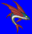
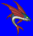
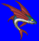
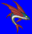

Length: About 6 cm. Weight: < 1 lb.
Habitat: Seabed Origin: Greece
Meaning: Latin "obstacle"
A mysterious fish that was thought to live in the Greek and Roman seas. Its fins are shaped like small wings. It has powerful suction cups that it uses to capture prey and attach to the bottom of boats. The suction cups are so powerful that one remora can render a 400-oar boat immobile.